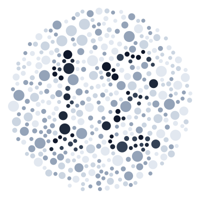

Test rápido de percepción cromática
Prueba visual rápida basada en láminas pseudoisocromáticas estilo Ishihara para explorar la discriminación rojo-verde. No requiere registro ni conexión externa.
Prepara tu pantalla antes de empezar
- Ajusta el brillo de tu pantalla a un nivel medio-alto y cómodo.
- Desactiva temporalmente los filtros de luz azul, modo lectura o Night Shift.
- Observa cada lámina de frente en un entorno con iluminación uniforme.
Descargo de responsabilidad médica:
Esta herramienta es estrictamente orientativa y educativa; no constituye ni sustituye un diagnóstico clínico profesional. Consulta a un especialista en optometría u oftalmología ante cualquier duda.
¿Qué número ves en la lámina?

Resumen de tu evaluación
Descargo de responsabilidad médica:
Este resultado es orientativo y no sustituye un diagnóstico clínico realizado por un profesional de la salud visual.